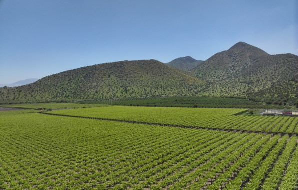

Plataforma de Monitoreo Satelital Agrícola para la Adaptación al Cambio Climático
La Plataforma de Monitoreo Satelital Agrícola para la Adaptación al Cambio Climático pone la tecnología satelital al servicio de agricultores y asesores agrícolas de la Región de Valparaíso. A través de indicadores espectrales, gráficos y mapas, permite conocer el comportamiento de los cultivos, observar su evolución semanal y reconocer diferencias dentro de cada predio.
Compara los cultivos con su propio historial y con otros similares de la misma zona, identifica sectores que requieren atención y utiliza información objetiva para orientar el seguimiento y las visitas a terreno. Siendo una herramienta de apoyo para avanzar hacia una agricultura más informada, eficiente y preparada frente al cambio climático.
Esta plataforma es el resultado de una iniciativa financiada con aportes del Fondo de Innovación para la Competitividad del Gobierno Regional de Valparaíso (FIC-R 2023) y ejecutada por el Laboratorio de Teledetección Ambiental (TeleAmb), perteneciente a la Facultad de Ciencias Naturales y Exactas de la Universidad de Playa Ancha.

El proyecto en números
Haz clic en cada cuadro para conocer más detalles del monitoreo.
Instituciones


Esta iniciativa ha sido financiada con aportes del Fondo de Innovación para la Competitividad del Gobierno Regional de Valparaíso año 2023 "Código BIP N° 40060933"